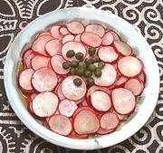

|
Radish Lemon SaladTunisia - Slatit Fjill | ||||
| Makes: Effort: Sched: DoAhead: |
6 app * 1-1/4 hr Part |
While called a "salad" this dish is more appropriately a palate clearing appetizer, similar to the pink ginger you get at a sushi bar. It's even similarly pink if you let it sit overnight after dressing. | |||
|
|
10 1/2 ------- 1 1-1/2 3 1/3 1/4 ------- 2 |
oz t --- t T T t t --- t |
Radishes, red Salt -- Dressing Preserved Lemon (1) Lemon Juice Olive Oil, ExtV Salt Pepper, black -- Garnish Capers |
Make - (1-1/4 hr - 20 min work)
|